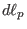

The equation of magnetic field lines is given by
where  is the line element along the direction of
 on
the poloidal plane. Equation (26) can be arranged in the form
on
the poloidal plane. Equation (26) can be arranged in the form
which can be integrated over to give
where the line integration is along the poloidal magnetic field (the contour
of  on the poloidal plane). Using this, Eq. (25) is written
on the poloidal plane). Using this, Eq. (25) is written
The safety factor characterizes the average pitch angle of magnetic field
lines on closed magnetic surfaces.
yj
2018-03-09